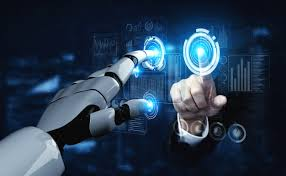
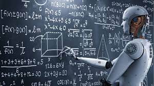

Artificial intelligence techniques
Links:
- index
- artificial intelligence development
- artificial intelligence techniques
- application of artificial intelligence


..
1. Machine Learning
It is one of the applications of AI where machines are not explicitly programmed to perform certain tasks; rather, they learn and improve from experience automatically. Deep Learning is a subset of machine learning based on artificial neural networks for predictive analysis. There are various machine learning algorithms, such as Unsupervised Learning, Supervised Learning, and Reinforcement Learning. In Unsupervised Learning, the algorithm does not use classified information to act on it without any guidance. In Supervised Learning, it deduces a function from the training data, which consists of a set of an input object and the desired output. Reinforcement learning is used by machines to take suitable actions to increase the reward to find the best possibility which should be taken in to account.
2. NLP (Natural Language Processing)
it is the interactions between computers and human language where the computers are programmed to process natural languages. Machine Learning is a reliable technology for Natural Language Processing to obtain meaning from human languages. In NLP, the audio of a human talk is captured by the machine. Then the audio to text conversation occurs, and then the text is processed where the data is converted into audio. Then the machine uses the audio to respond to humans. Applications of Natural Language Processing can be found in IVR (Interactive Voice Response) applications used in call centres, language translation applications like Google Translate and word processors such as Microsoft Word to check the accuracy of grammar in text. However, the nature of human languages makes the Natural Language Processing difficult because of the rules which are involved in the passing of information using natural language, and they are not easy for the computers to understand. So NLP uses algorithms to recognize and abstract the rules of the natural languages where the unstructured data from the human languages can be converted to a format that is understood by the computer.
3. Automation and Robotics
The purpose of Automation is to get the monotonous and repetitive tasks done by machines which also improve productivity and in receiving cost-effective and more efficient results. Many organizations use machine learning, neural networks, and graphs in automation. Such automation can prevent fraud issues while financial transactions online by using CAPTCHA technology. Robotic process automation is programmed to perform high volume repetitive tasks which can adapt to the change in different circumstances.
4. Machine Vision
Machines can capture visual information and then analyze it. Here cameras are used to capture the visual information, the analogue to digital conversion is used to convert the image to digital data, and digital signal processing is employed to process the data. Then the resulting data is fed to a computer. In machine vision, two vital aspects are sensitivity, which is the ability of the machine to perceive impulses that are weak and resolution, the range to which the machine can distinguish the objects. The usage of machine vision can be found in signature identification, pattern recognition, and medical image analysis, etc.